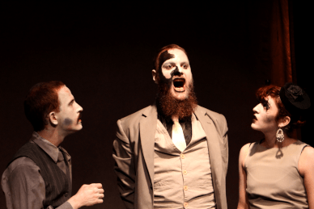
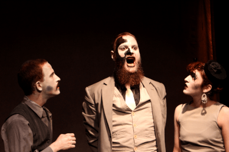

{kind=link}
{kind=link}
{kind=link}
{kind=link}

{kind=link}
{kind=link}
{kind=link}
{kind=link}
{kind=link}
 

Éste fue un espectáculo de teatro que se constituyó como proyecto de dirección para la EMAD. Corría el año 2016, pasando mitad de año fue el estreno. El texto es el original de Eduardo Pavlovsky, del 1962. El montaje fue una gigante supervitamina de engrosamiento. Primero por el cachetazo de las tareas de producción y segundo por la ajedrecística adivinanza de cómo hacer más raro lo que ya de por sí es rarísimo. En 2017 hicimos una temporada fuera de la EMAD, en el teatro El Espión. En total la habrán visto entre 300 y 400 personas.
Ficha Técnica
Texto: Eduardo Tato Pavlovsky
Elenco: Manon Lavayén, Tomas Peralta, Diego Semino, Ayelén Yrigoyen
Escenografía: Nabila Hosain
Máscaras: Avril Vismara
Diseño de maquillaje: Lucíana Hospital
Iluminación: Romina Larroca
Diseño sonoro: Dante Mangone
Diseño gráfico: Nabila Hosain
Asistencia de dirección: Franco Vega Valiente
Producción y Dirección: Pancho Piarristeguy
Registro
{kind=link}
{kind=link}
{kind=link}